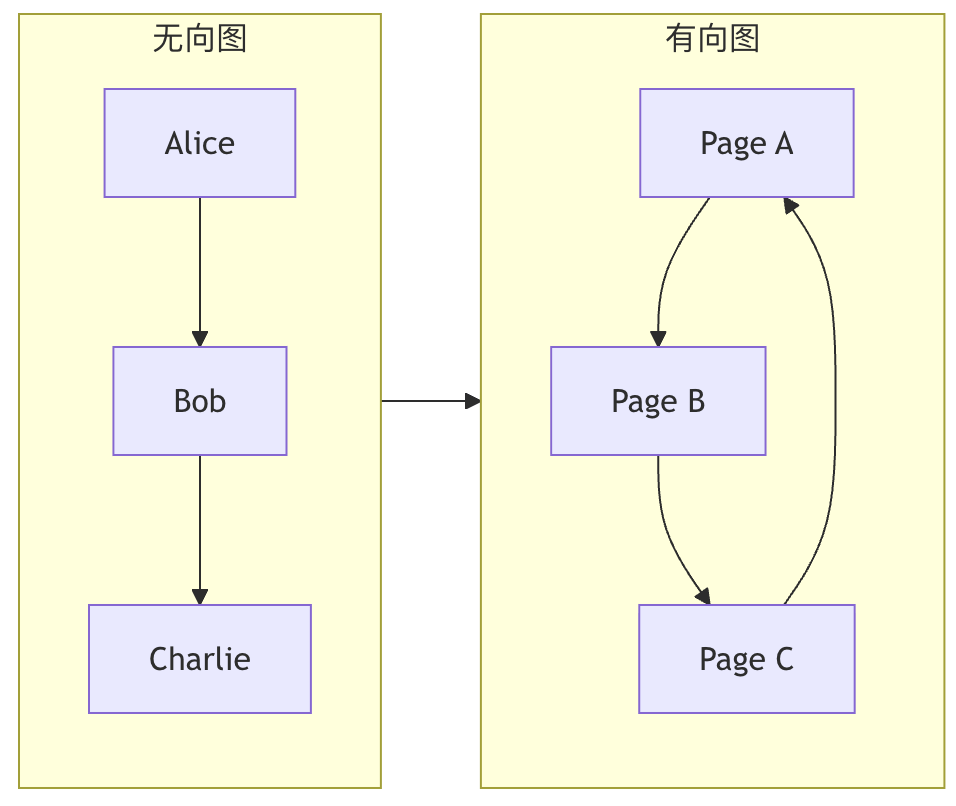
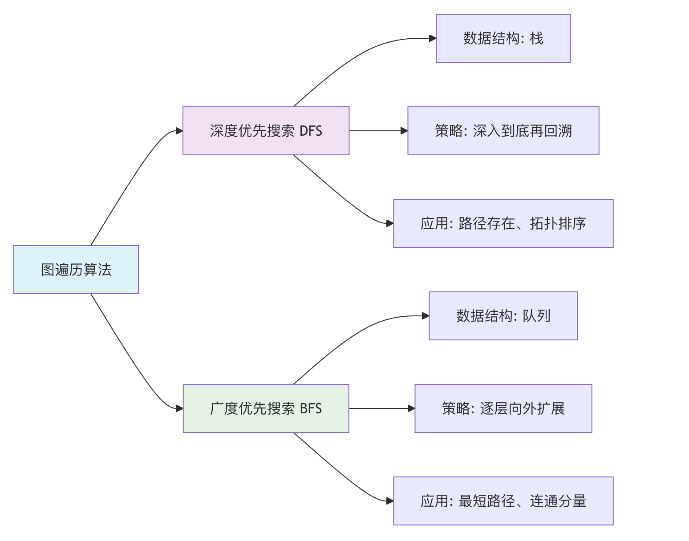

グラフ理論構造
コンピュータ科学において、グラフはソーシャルネットワーク（ユーザーが点、友人関係が線）、Webリンク（Webページが点、ハイパーリンクが線）、通信ネットワーク、さらには経路計画などの問題をシミュレーションするために広く使用されています。
图それはまるでソーシャルネットワークの関係図のようです：
- ノード（頂点）：ソーシャルネットワーク上の各人
- 边：人と人との関係（友達、フォローなど）
- 重み：関係の強さ（親密度、やり取りの頻度など）
あなたの住む街の交通ネットワークを想像してみてください：各場所（自宅、学校、ショッピングモールなど）は点、これらの場所を結ぶ道路は线。グラフ（Graph）は、このような点と線の関係を数学的に抽象化したものであり、次のようなものを表すために使用されます。エンティティ間の複雑な関係のデータ構造です。
現実の生活での例：
- 地図：都市がノード、道路がエッジ、距離が重み
- 電気回路：部品がノード、導線がエッジ、抵抗が重み
- インターネット：Webサイトがノード、リンクがエッジ、トラフィックが重み
- 交通ネットワーク：駅がノード、路線がエッジ、運賃が重み
| シナリオ | 他の構造 | グラフ構造 |
|---|---|---|
| ソーシャル関係 | 複雑な関係を表現しにくい | 多対多の関係を自然に表現できる |
| 経路計画 | 複雑なデータ構造が必要 | ネットワークと経路を直感的に表現 |
| 依存関係 | 循環依存を表現しにくい | 複雑な依存を簡単に処理 |
| ネットワーク分析 | ネットワークトポロジを表現できない | ネットワーク構造を完璧に記述 |
グラフの基本用語
| 用語 | 定義 | 生活のたとえ | 記号表記 |
|---|---|---|---|
| 頂点（Vertex） | グラフの基本単位 | ソーシャルネットワーク上の人 | V, u, v |
| 辺（Edge） | 2つの頂点を結ぶ線 | 2人の間の関係 | E, (u,v) |
| 次数（Degree） | 頂点に接続されている辺の数 | ある人の友達の数 | deg(v) |
| 経路（Path） | 頂点の列 | AからBへのルート | v₁→v₂→…→vₙ |
| 閉路（Cycle） | 始点と終点が同じ経路 | 家を出発して最終的に家に戻る | v₁→v₂→…→v₁ |
| 連結グラフ | 任意の2点間に経路が存在する | 全員が互いに連絡を取り合える | |
| 重み（Weight） | 辺の数値属性 | 2つの都市間の距離 | w(u,v) |
グラフの分類

| 分類基準 | タイプ | 特徴 | 応用シーン |
|---|---|---|---|
| 方向性 | 無向グラフ | 辺に方向がない | 友達関係、道路ネットワーク |
| 有向グラフ | 辺に方向がある | フォロー関係、ワークフロー | |
| 重み | 重みなしグラフ | すべての辺の重みが同じ | ソーシャルネットワーク関係 |
| 重み付きグラフ | 辺が異なる重みを持つ | 地図の距離、ネットワークトラフィック | |
| 連結性 | 連結グラフ | 任意の2点に到達可能 | 交通ネットワーク |
| 非連結グラフ | 孤立点が存在する | ソーシャルグループ | |
| 环 | 非巡回グラフ (DAG) | 閉路がない | タスク依存、家系図 |
| 巡回グラフ | 閉路を含む | 道路ネットワーク |
グラフの表現方法
隣接行列
| 特性 | 説明 | 時間計算量 | 空間計算量 |
|---|---|---|---|
| 格納方法 | 2次元行列 | ||
| 辺の存在確認 | matrix[i][j] != 0 |
O(1) | |
| 辺の追加 | matrix[i][j] = weight |
O(1) | |
| 辺の削除 | matrix[i][j] = 0 |
O(1) | |
| 隣接点の走査 | 行/列のスキャン | O(V) | |
| 空間使用量 | V×V行列 | O(V²) |
隣接リスト
| 特性 | 説明 | 時間計算量 | 空間計算量 |
|---|---|---|---|
| 格納方法 | 配列+リンクリスト | ||
| 辺の存在確認 | リンクリスト内を検索 | O(deg(v)) | |
| 辺の追加 | リンクリストに追加 | O(1) | |
| 辺の削除 | リンクリストから削除 | O(deg(v)) | |
| 隣接点の走査 | リンクリストを走査 | O(deg(v)) | |
| 空間使用量 | 頂点配列+辺リンクリスト | O(V+E) |
グラフの基本概念
グラフはG2つの集合から構成されます：
- 頂点集合 V (Vertex Set): グラフ内のすべての点の集合。
- 辺集合 E (Edge Set): これらの点を結ぶ線の集合。1つの辺は、それが接続する2つの頂点によって
(u, v)表されます。
例
# 頂点： Alice, Bob, Charlie, Diana
# 辺： それらの間の友達関係を表す
social_graph = {
'Alice': ['Bob', 'Charlie'], # Alice は Bob と Charlie の友達です
'Bob': ['Alice', 'Charlie', 'Diana'],
'Charlie': ['Alice', 'Bob'],
'Diana': ['Bob']
}
print(f"顶点（用户）: {list(social_graph.keys())}")
print(f"Alice 的好友（边）: {social_graph['Alice']}")
出力：
顶点（用户）: ['Alice', 'Bob', 'Charlie', 'Diana'] Alice 的好友（边）: ['Bob', 'Charlie']
グラフの分類と重要概念
グラフは、その辺の特性によっていくつかのタイプに分類できます。これらを理解することは、グラフ理論を習得するための基礎です。
無向グラフ vs 有向グラフ
| タイプ | 辺（Edge）の特徴 | 生活のたとえ | 例 |
|---|---|---|---|
| 無向グラフ | 辺に方向がなく、(A, B)A と B が互いに接続されていることを表します。 |
双方向の友情：Alice が Bob の友達なら、Bob も必ず Alice の友達です。 | ソーシャルネットワークの友達関係、電気回路の接続。 |
| 有向グラフ | 辺に方向があり、A -> BA から B への一方向の接続を表します。 |
微博（Weibo）のフォロー：あなたは誰かをフォローできるが、相手は必ずしもあなたをフォローするとは限らない。 | Webページのハイパーリンク、タスク依存関係、交通の一方通行。 |

重み付きグラフ
重み付きグラフでは、各辺に数値（重み）が割り当てられ、距離、コスト、時間、関係の強さなどを表すことができます。
例
weighted_graph = {
'北京': {('上海', 1200), ('天津', 100)}, # 北京から上海までの距離は1200、天津までは100
'上海': {('北京', 1200), ('杭州', 200)},
'天津': {('北京', 100)},
'杭州': {('上海', 200)}
}
重要用語
- 次数 (Degree): 1つの頂点に接続されている辺の数。有向グラフでは、入次数（その頂点に向かう辺の数）と出次数（その頂点から出る辺の数）。
- 経路 (Path)ある頂点から別の頂点へ経由する辺の列。例
A -> B -> C。 - 閉路/サイクル (Cycle)：始点と終点が同じ頂点である経路。
- 連結グラフ (Connected Graph)：無向グラフにおいて、任意の2頂点間に経路が存在する。
- 強連結グラフ (Strongly Connected Graph)：有向グラフにおいて、任意の2頂点間に存在する双方向経路。
グラフの格納方法
コンピュータでグラフを表現するにはどうすればよいですか？主に2つの主流な方法があります。
隣接行列
2次元配列（行列）を使用してmatrixグラフを表現します。matrix[i][j]の値は頂点iから頂点jへの辺の状況を表します。
- 無向グラフの場合、行列は対称です。
- 重み付きグラフの場合、行列の値は重みを格納します（特別な値（例えば
0或∞が辺なしを表す）を使用します）。 - 利点：任意の2頂点間に辺があるかどうかのチェックが非常に高速（
O(1)）。 - 欠点：占有スペースが大きい（
O(V^2)）、辺の数が少ない「疎グラフ」では空間を無駄にします。
例
# 頂点： 0-A, 1-B, 2-C
# 辺： A-B, A-C
V = 3 # 頂点数
adj_matrix = [[0] * V for _ in range(V)]
# 辺 A-B (0-1) を追加
adj_matrix[0][1] = 1
adj_matrix[1][0] = 1 # 無向グラフでは対称位置を設定する必要がある
# 辺 A-C (0-2) を追加
adj_matrix[0][2] = 1
adj_matrix[2][0] = 1
print("隣接行列：")
for row in adj_matrix:
print(row)
# 出力：
# [0, 1, 1]
# [1, 0, 0]
# [1, 0, 0]
隣接リスト
各頂点に対してリスト（連結リスト、配列など）を維持し、直接接続されているすべての頂点（および重み）を記録します。
- 利点：空間効率が高い（
O(V + E)）、特に疎グラフに適しています。ある頂点のすべての隣接頂点を高速に見つけられます。 - 欠点：任意の2頂点間に辺があるかどうかのチェックが遅い（
O(degree(V))）。
例
adj_list = {
'A': ['B', 'C'], # A は B と C に接続している
'B': ['A'], # B は A に接続している
'C': ['A'] # C は A に接続している
}
print("隣接リスト：")
for vertex, neighbors in adj_list.items():
print(f"{vertex}: {neighbors}")
グラフの探索アルゴリズム
走査はグラフアルゴリズムの基礎であり、グラフ内のすべての頂点を体系的に訪問することを意味します。
主に2つの戦略があります：
幅優先探索
幅優先探索（BFS）は「水の波紋が広がる」ように、開始点から始めて、まずすべての直接の隣接頂点を訪問し、次にその隣接頂点の隣接頂点を訪問し、というように続けます。これはキューを使用して実装します。
アルゴリズムの手順：
- 開始点をキューに入れ、訪問済みとしてマークします。
- キューが空でない間：
a. キューの先頭の頂点を取り出す
v。 b. 訪問：vその頂点のすべての未訪問の隣接頂点をキューに入れ、訪問済みとしてマークします。 - 手順2を繰り返します。
例
def bfs(graph, start):
"""BFS を使用してグラフを走査し、訪問順序を返す"""
visited = set([start]) # 訪問済み頂点を記録
queue = deque([start]) # キューを初期化
result = [] # 訪問順序を保存
while queue:
vertex = queue.popleft()
result.append(vertex)
# 現在の頂点の隣接頂点を走査
for neighbor in graph[vertex]:
if neighbor not in visited:
visited.add(neighbor)
queue.append(neighbor)
return result
# テストデータ
test_graph = {
'A': ['B', 'C'],
'B': ['A', 'D', 'E'],
'C': ['A', 'F'],
'D': ['B'],
'E': ['B', 'F'],
'F': ['C', 'E']
}
print("BFS 走査順序（Aから開始）:", bfs(test_graph, 'A'))
# 出力例: ['A', 'B', 'C', 'D', 'E', 'F']
深さ優先探索
深さ優先探索（DFS）は「迷路を進む」ように、1つの道を選んで行き止まりまで進み、その後バックトラックして別の道を進みます。これはスタック栈（または再帰）を使用して実装します。
再帰アルゴリズムの手順：
- 頂点
vから始めて、訪問済みとしてマークします。 - その頂点の
v各未訪問の隣接頂点に対してu： a. 再帰呼び出しDFS(u)。
例
"""再帰を使用して DFS を実装する"""
if visited is None:
visited = set()
if result is None:
result = []
visited.add(vertex)
result.append(vertex)
for neighbor in graph[vertex]:
if neighbor not in visited:
dfs_recursive(graph, neighbor, visited, result)
return result
print("DFS 走査順序（Aから開始）:", dfs_recursive(test_graph, 'A'))
# 出力例: ['A', 'B', 'D', 'E', 'F', 'C']
グラフ走査アルゴリズムの比較:

代表的な応用シーンとアルゴリズムの紹介
グラフの表現と走査を理解すれば、多くの古典的な問題を探索できます：
最短経路問題：地図ナビゲーションで、2点間の最短走行距離を見つけます。
- ダイクストラ法：適用対象は重みが非負のグラフです。
- フロイド法：すべての頂点ペア間の最短経路を計算します。
最小全域木：すべての頂点が連結であることを保証した上で、総重みが最小の辺集合を選択します（例：複数の村にコスト最小の光ファイバーネットワークを敷設する）。
- プリム法
- クラスカル法
トポロジカルソート：有向非巡回グラフ（DAG）の頂点を線形にソートし、任意の有向辺について
u->v，uその始点が常に並び順でvその終点より前に置かれるようにします（例：コースの学習順序を決める）。
クリックしてノートを共有
ノートは本記事の内容の拡張である必要があります！
記事の投稿は、こちらをクリック
登録招待コードの取得方法
ノートを共有する前にログインが必要です！
登録招待コードの取得方法